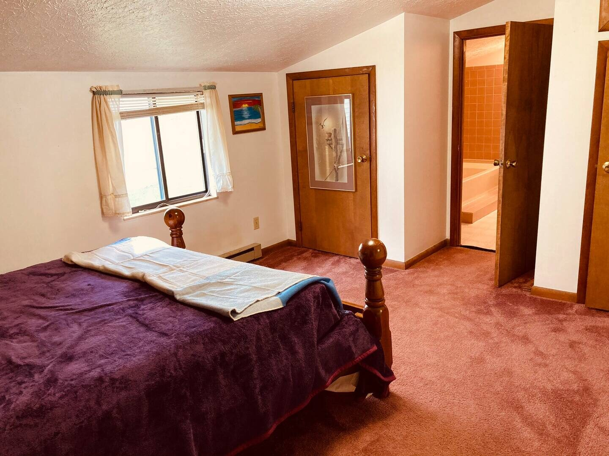

↗
Relocation
Arrive in the valley while you search for a permanent home or settle into a new role.
Mid-term rentals
Our mid-term option is designed around stays of roughly 30 days through 12 months, depending on the home and agreement. It is a practical fit when a nightly rental is too short and a traditional lease is too rigid.
A furnished place to work from
Mid-term guests often arrive for a work assignment, a move, a renovation, a family transition, or a season that needs a little breathing room. We focus on the practical details that help a stay feel livable.

Good fit for
Arrive in the valley while you search for a permanent home or settle into a new role.
Keep a comfortable base for a contract, project, academic term, or temporary assignment.
Make room for renovations, family changes, insurance stays, or a new plan.
Next step
We will review the current inventory and follow up about homes that fit your request.